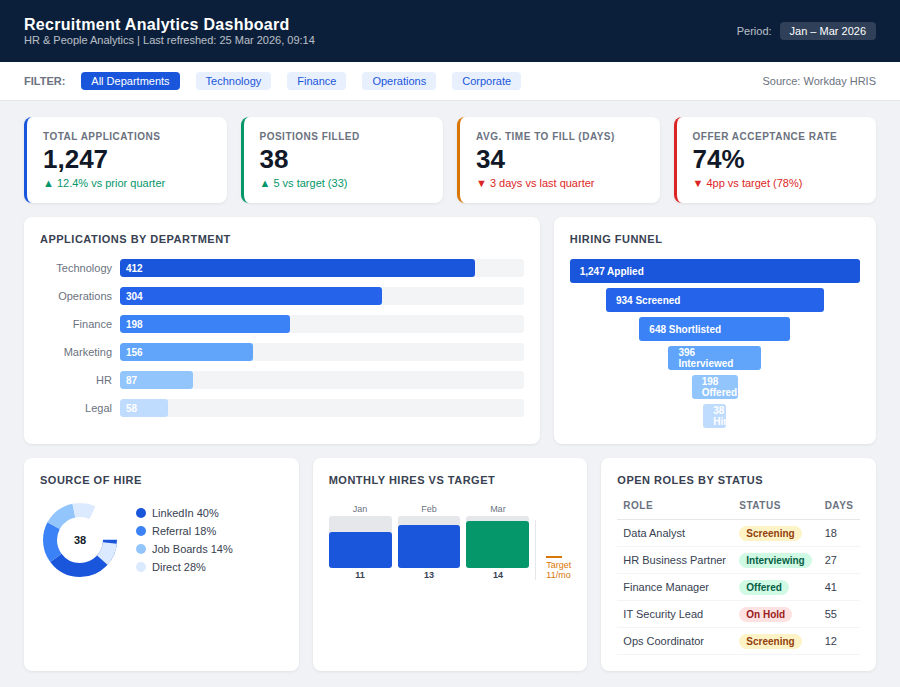
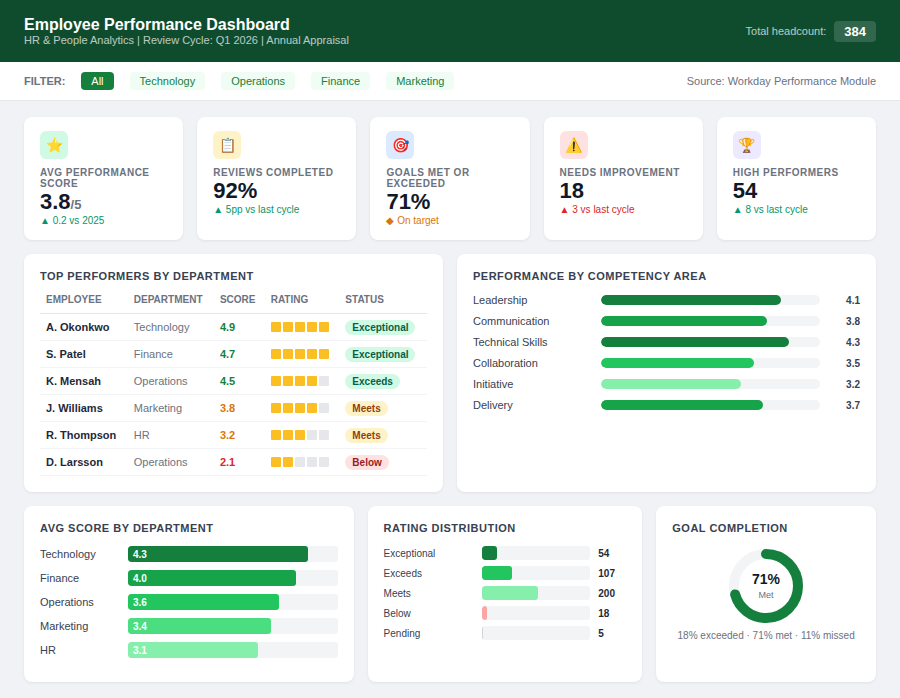
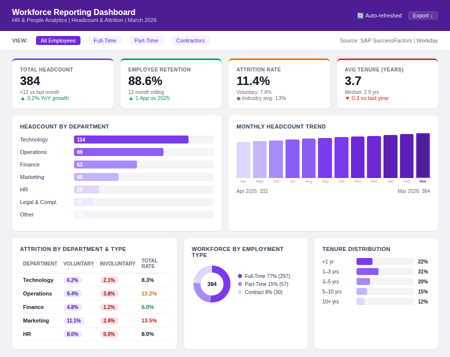

Olajumoke O. Medunoye

I am passionate about using data to improve workforce performance, recruitment efficiency, and customer service operations. My experience working directly with customers and operational teams helped me understand how data can drive better decisions and improve organisational performance. Today, I use analytics to identify trends, monitor performance, and support workforce planning across HR and operations.
About Me
I am an HR and People Analytics professional with experience in customer service and workforce operations. I specialise in analysing workforce and operational data to support better decision-making, improve performance, and enhance service delivery. I am currently open to opportunities across the United Kingdom and remote roles in:
- HR Analytics
- People Analytics
- Workforce Planning
- Operations Analytics
- Customer Success
Core Skills
- HR Analytics
- Workforce Planning
- Recruitment Analytics
- Customer Service Analytics
- Performance Monitoring
- Data Visualisation
- Power BI
- SQL
- Excel
AI & Advanced Analytics
Portfolio Projects
Project Screenshots




Contact
LinkedIn: View LinkedIn Profile
Email: olajumokemedunoye@gmail.com
Download CV